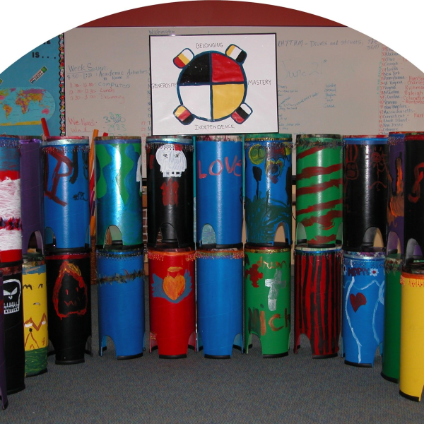

Programs
RhythmVision services many different types of clients and we love to build new relationships. We believe that integration of rhythmic principles in schools and communities at large is a big reason that keeps buisness returning. Our clients are very important to us and we take great strides to accomodate a variety of special circumstances.
All of our programs can be customized according to your organization's needs and objectives. However here are the details of our most popular programs.
-
RHYTHMIC FOUNDATIONS™
This course helps students explore and develop strong character traits utilizing a drum-circle format that reinforce proven concepts in a fun, engaging environment, including:
- Introduction to the 4 principles of The Wheel of Courage
- Belonging, Independence, Mastery, Generosity
- Engagement, self-expression, and leadership opportunities
- Proper hand drumming techniques and counting skills
- Leadership opportunities through public speaking, poise, self and community awareness
- Introduction to the 4 Basic Elements of Music
- Rhythm, Melody, Harmony, Dynamics
- Develop musical intelligence
- Enhance modes of self expression
- Critical listening skills
- Precision, synchronized teamwork
- From 8 - 30 students
- Duration: (16) hours of classroom time within a semester
- $120/hr
-
RHYTHMIC FOUNDATIONS™ ADVANCED
This course builds on the fundamentals to further develop strong character traits that also give students hands-on experience in recording production projects, including:
- Advanced study and application of the 4 principles of The Wheel of Courage
- Belonging, Independence, Mastery, Generosity
- Engagement, self-expression, and leadership opportunities
- Proper hand drumming techniques and counting skills
- Leadership opportunities through public speaking, poise, self and community awareness
- Higher level learning with the 4 Basic Elements of Music
- Rhythm, Melody, Harmony, Dynamics
- Develop musical intelligence
- Enhance modes of self expression
- Collaborative songwriting
- In-depth, hands-on experience in producing digitally recorded musical compositions while developing
- 21st century technology skills
- Critical listening skills
- Precision, synchronized teamwork
- Individual and group focus towards completion of a musical composition
- Projects to cover
- Musical theory
- Song construction
- Instrument review
- Read & write music
- Recording & engineering
- Class records a final CD product
- Course culminates in a community service performance, TBD
- All Digital Recording equipment provided
- Includes final CD copy of song(s) for each student
- Pre-requisite – RhythmVision Rhythmic Foundations
- From 8 - 30 students
- Duration: (16) hours of classroom time
- $125/hr
-
DIGITAL READERS THEATRE WORKSHOP™
This course strengthens reading fluency while developing strong character traits and abilities to work as a group. Rhythm and acting are taught as the class dives into author perspective and learns new vocabulary to record an audio book for their school library to help others learn to read.
- Introduction to the 4 principles of The Wheel of Courage
- Belonging, Independence, Mastery, Generosity
- In tandem with The Wheel of Courage, an in-depth focus on 4 key areas of reading fluency
- Perspective
- Vocabulary
- Inflection
- Expression
- Introduction to acting skills as they apply to recording audio books for the school’s library
- All students participate in the process of how to create, record and produce audio books, with hands-on experience including:
- Recording
- Sampling
- Acting/voiceovers
- All equipment provided by RhythmVision
- Includes final CD copy of audio book for each student
- From 5 - 20 students
- Duration: (24) hours of classroom time within a semester
- $125/hr
-
DRUM CIRCLE EVENT™
Bring people of any age together instantly in a fun engaging way. Experience cooperative learning at it’s best with a freedom to try new way of being with a group.
Students participate in a drum circle experience that teaches and engages them in:
- Proper hand drumming techniques, counting skills and rhythmic awareness
- Leadership through public speaking, poise, critical listening, self and community awareness
- Group facilitation skills that teach group goal setting, the individual’s role in the group and understanding proper windows of communication
- The principles of the Wheel of Courage
- Belonging, Independence, Mastery, Generosity
- A fun environment to practice overcoming shyness, communicating effectively to avoid misunderstandings, handling requests, initiating and carrying out community conversations and recognizing that there is always a choice
- Sharing the understanding and benefits of music
- Up to 100 students
- Drums and percussion instruments provided
- Duration: (1) hour
- Cost depends on group size and duration – under 30 people for 1 hr $250
AFTER-SCHOOL ENRICHMENT
Engage students of any age in positive community building classes through music. Let’s create a fun, safe class for personal exploration together. We can dovetail with the academic training being received.
Any of our signature courses can be an after-school program. A bit more freedom to explore will be found in these enrichments. Teacher assessments and knowledge tests are generally not a part of afterschool programs. They are designed to meet the client’s need. It can start as group exploration of rhythm to leaning how to record a CD. Studying a culture? Let us dive into the instruments of that culture and how they were made and used.
- Minimum of 8 students
- Drums and percussion instruments can be provided or purchased
- Duration: (1) hour
- $8/per class
RHYTHMIC FOUNDATIONS™ FOR INSTRUCTORS
Ready to build strong community in your classroom and bring new opportunities for leadership to those that haves not tried before? A little put off by the drumming? No worries, let’s do rhythms with your hands or pencils.
- Introduction to the 4 principles of The Wheel of Courage
- Belonging
- Independence
- Mastery
- Generosity
- Instructors learn how to
- Improve classroom management skills
- Facilitate a drum circle experience
- Recognize & develop leadership skills within the classroom
- Emphasize proper behaviors
- Teach proper hand drumming techniques and counting skills
- Share how public speaking, poise, self and community awareness can all be addressed throughout the drum circle
- Teach the techniques of drumming as a catalyst for engaging students in the principles of The Wheel of Courage
- Help students embrace The Wheel of Courage by allowing each student the opportunity to actively guide each session
- Instill the understanding and benefits of music and The Wheel of Courage in everyday life
- Duration: (8) hour workshop
- Price TBD based on number of participants
-
DRUM BUILDING WORKSHOP™
- Students are introduced to the science of instrument building and learn how to build drums
- Expressive arts through affixing a goat skin drumhead and decorating the body
- Experience a true sense of ownership and pride with the instrument made
- Participate in a drum circle experience that teaches and engages students in
- Proper hand drumming techniques and counting skills
- Leadership through public speaking, poise, self and community awareness
- The principles of the Wheel of Courage - Belonging, Independence, Mastery, Generosity
- Sharing understanding and benefits of music
- Tubano Style Drums *($75 each): 24” H x 10” W; approximately 6 lbs.
- Up to 30 students
- Duration: (4) hours of classroom time within a semester, or After School program $500
*Prices can be negotiated depending on quantity of drums purchased
-
DRUM BUILDING WORKSHOP
- FOR INSTRUCTORSWant to build drums with a group? We can teach you how to do that. It’s fun and easy and we have a few tricks to keep it tidy too!
- One-on-One instruction on building drums
- How to break it into multiple sessions
- How to keep the tie-dying neat
- How to teach group cooperation while making drums
- Includes two drum making kits
- 24” H x 10” W; approximately 6 lbs.
- Duration: 1 hour workshop
- $300 – includes 2 drums
* All RhythmVision programs meet or exceed Colorado Department of Education standards
Philosophy
As RhythmVision embarked upon one of our first extensive programs, we knew it would be a challenge. Our mission was to provide a quality summer camp experience for a population of elementary school-aged children who faced a
variety of difficult situations. Since RhythmVision’s inception, we specifically chose challenged and underserved people as our target population. Key members of our organization have a history working with at-risk youth in educational and therapeutic environments.
Wheel Of Courage

Data
While there is theoretical and experiential evidence in the literature supporting the efficacy of group-based music and rhythm teaching strategies with children, very little empirical study has been conducted on direct benefits of drumming specifically on school belonging and self-perceptions of drumming competence. RhythmVision’s current evaluation study examines children’s perceptions of school belonging and will ultimately explore associations of drumming participation with other measures of school achievement and attendance. Thus, our evaluation of this work may provide a substantive contribution to the research literature in this area.
See more
Method: To measure child outcomes in the Fort Logan Rhythmic Foundations study, a modified version of the Psychological Sense of School Membership Scale (PSSM) is administered pre- and post-program. Prior research indicated that the PSSM has adequate internal consistency for the original and modified versions ranging from .80 to .88 (Goodenow, 1993b; Murdock & Bolch, 2005). In his research, Hagborg (1998) reported that PSSM scores predict student benefits derived during small group experiential learning experiences (Hagborg, 1993). Additional items were developed to examine student outcomes related to classroom drumming perceptions, school competence and self-worth, and cooperative learning. Pre- and post-test data collection was conducted onsite in the classrooms within the school. The survey was administered by reading each item aloud to the group and allowing children to mark their responses. Program staff were present to address questions as they went along and extra support was provided to children whose first language was not English. Data were entered into databases specifically designed for the study, checked for accuracy, and analyzed. Analysis included paired t-tests to examine change over time for program participants. Daily classroom observational data were also gathered and provided a qualitative complement to the quantitative data. Interviews with key stakeholders are also an element of the RV’s qualitative evaluation.
2011-2012 Findings: The school belonging outcome showed that children’s scores statistically significantly improved between the pre and post test. The school competency construct also showed a statistically significant improvement from pre to post. Observational data indicated that the key skills of belonging, mastery, independence, and generous develop simultaneously in children over the course of the program and that key events experienced by children trigger more in-depth internalization of these concepts. Interview data revealed that program strengths include powerful opportunities for building children’s leadership ability and the emerging connection with other areas of academic growth in the typical school day – the program helps form children’s foundation for learning. The program’s accessibility to children of all academic levels and demographic risks is another key strength. Program challenges include operating within the sometime-difficult-to-navigate school system and constraints such as the length of the school day.
Quality Improvement: RhythmVision values a continuous, quality improvement approach. Key evaluation findings are used in program decision-making by the executive director, the program teacher-facilitators, and the Board of Directors to shape, develop, and redirect program activities. The positive findings of the program implementation, and its evaluation to-date, have spurred strategic programmatic decisions.. For example, positive results encouraged Fort Logan to invite the program back for a second and third year of programming, supported the addition of new programmatic components to meet children’s needs at Fort Logan Elementary, and sparked the search for additional funding. The program also uses process/program implementation data such as children’s attendance to monitor the dosage of the program children receive: a) to address when children’s attendance wanes and b) to help explain quantitative findings. The program is currently in the process of creating a more systematic and timely approach to using program data to make mid-course corrections to program activities and to respond to the needs of the school and program participants. One recent addition to the program’s system of continuous improvement is the use of children’s self-and-peer evaluations to provide ongoing opportunities for discussion and growth among the teacher-facilitators and the children. As the program components demonstrate sustained effectiveness and develop a stable evidence base, we will be able to develop a system for replication and for monitoring fidelity to the program model that will help us provide consistent and quality programming.
Evaluation growth: In terms of evaluation next steps, the program intends to boost the rigor of the findings by formally incorporating the non-program comparison group. Our piloting of this design element informed us that we need to collect pre and post comparison data for the study, rather than post-only because of initial (pre-program) differences between the children who got the program versus those who did not. In this way we will be able to control for initial differences for a more accurate group comparison. Other areas for improvement and growth in our evaluation include the following: a) creation of a parallel version of our survey in Spanish to accommodate data collection in the language children are most comfortable with; b) addition of a stronger implementation and fidelity monitoring component to ensure high quality programming and to use in ongoing decision-making; c) collection of formal school data on outcomes, such as reading and math scores, to assess the program’s contribution to potential improvements other academic domains; d) addition of creative data collection techniques with technology and recording equipment as a source of analyzable qualitative data; e) inclusion of several child-level case studies that may include examinations of parental involvement, more in-depth child, teacher, and parent interviews, and examination of school data; and f) creation of a staff-accessible database and tracking system to document attendance, daily observations, and ongoing assessment findings for ongoing storage and monitoring of program data.
Teacher Assessment Report: Upon completion of full courses, RhythmVision instructors can provide written assessments that give an overview of classes and individual performances. These detailed reports serve as way to communicate levels of student involvement and goals reached.
Student Knowledge Tests: These tests are administered at the onset of an extended length program and at the end. In the case of our Rhythmic Foundations class, we teach and assess skills related to basic music skills. We assess skills in reading fluency as part of Digital Reader's Theatre. Both knowledge tests contain questions that gauge basic awareness of the Wheel of Courage's 4 principles.
About Us
RhythmVision services many different types of clients and we love to build new relationships. We believe that integration of rhythmic principles in schools and communities at large is a big reason that keeps buisness returning. Our clients are very important to us and we take great strides to accomodate a variety of special circumstances.
All of our programs can be customized according to your organization's needs and objectives. However here are the details of our most popular programs.